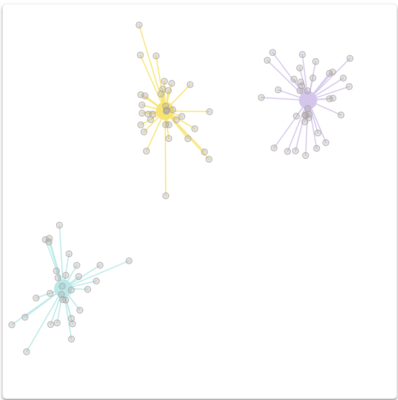

Homework #1 - Vis in the Wild
Akshara Balasubramanian - abalas47@asu.edu

K-Means Clustering
Summary: K-means is a unsupervised clustering algorithm that groups similar data points without requiring labeled data. It uses the Euclidean distance to determine similarity between points. The algorithm starts by choosing random points as prototypes, then assigns data points to the closest prototype, updates the prototypes to the average of their assigned points, and repeats this process until the convergence. The algorithm reduces inertia, which is the total distance between the data points and the center of their clusters. It works best with the round clusters that have similar spread, which implies that k-means doesn't work good with long or irregular shapes. The output is based on the point where the algorithm starts, but k-means++ makes it more reliable. It is also important to choose the right number of clusters, when we are not that aware of the data. Thus preprocessing the data like adjusting the scales helps in calculating the
distance accurately. The algorithm is affected by outliers, which can pull the cluster centers off track. Exploring different dataset transformations and initialization methods can reveal interesting insights into clustering outcomes.
- Domain description: The domain mainly concentrates on unsupervised machine learning, focusing on the clustering aspect using the K-Means algorithm. This involves grouping data points based on the similarity of their features to minimize internal variance. Key considerations include data preprocessing, cluster shape assumptions, and sensitivity to outliers.
- Data Description:The given dataset consists of 100 observations on cat features like chonkiness and fur lightness.These features, the visualization is made and data points are clustered based on their similarity which results in formation of distinct group.
- Visualization Reflection:The visualization part was extraordinary, offering an option to select between the number of datasets to be visualized. Based on the number chosen, the visualization dynamically adds or removes scatter plots. Each individual scatter plot consists of data points, clusters, centroids, and decision boundaries, with mild and attractive colors that enhance user engagement. Interactive elements, such as draggable prototypes and visual updates on cluster assignments, further enhance engagement and learning. The scrollytelling also features a picture displaying scatter plots, each representing a different dataset, with a dropdown available to select the number of samples.
- Reflection on Other Narrative Cues and Structuring: The narrative structure effectively blends textual explanations with visual plots that offer step-by-step insights into the clustering process upon scrolling. The scrollytelling provides active user engagement, where the user is given a choice to select the number of datasets to be visualized, which can be upscaled or downscaled based on the user's requirement. The story progresses logically from the problem statement to algorithm exploration and property evaluation, creating a coherent and educational experience, which altogether makes the concept more readable.
Personal Thoughts Through this, I realized the importance of k-mean clustering algorithm in simplifying real-world complexities. It helps in understanding the importance of picking the right number of clusters and process of adjusting centroids. I have also noticed that k-mean worked best with round clusters, which in turn make me think that different datasets might need different clustering methods.